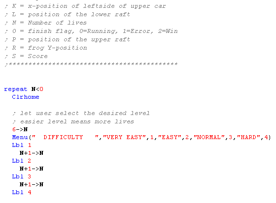
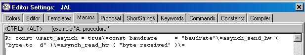
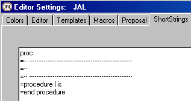
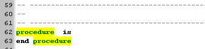
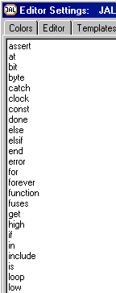

August 2006
TI-basic (84) editor
Introduction
JALcc is an Integrated Development Environment (IDE) for technical projects. One of the dedicated editors within JALcc is the TI-basic editor. Because we expect that some will only use the TI-basic editor from the total JALcc IDE, therefor we tried to make the description below complete enough to work with the TI-basic editor.
This first version of the TI-basic code-editor is made, without any knowledge or experience with the TI-84 calculator (after a few hours of playing, we disliked the programming in an 8-line screen that much, that we wrote this editor). So suggestions are welcome.
(for download, see download page)
CodeEditor Overview
The main items of the CodeEditor are (see image below):
The CodeEditor has a full code colored highlighter, and besides all the standard features of the general CodeEditor, it has a number of special features adapted to TI-basic.
The organized tree on the left can be used to insert functions into the editor, and moreover each item in the tree is associated with a (small) textfile, which can be used by the user to store personal notes about certain functions.
The Statusbar displays the status of the editor, but all the colored panels in the statusbar also act as buttons which performs certain actions.
All text following a semi-colon is treated as comment. Comment may appear on the same line as normal TI-commands.
Uploading
|
By pressing F9 or pressing on the outer-right panel of the statusbar, the program will be translated in TI-codes, Virtual TI form Rusty Wagner will be started, the code will be uploaded and the program runs on VTI. By pressing shift-F9, the program is translated and uploaded to a real TI-machine (provided you've installed the driver correctly). You can also run a selected region of the editor, in the virtual VTI, by pressing Alt-F9. CodeSize is reported in the memo at the bottom. |
Partial Code Execution
|
By selecting a piece of code, and selecting "Execute Selection" from the right mouse menu, the selected code will be turned into a complete program, which will be uploaded to the virtual VTI. If the selection contains any comment line, the comment tag is removed, thereby turning the comment into normal code. In the example on the right, we're not sure if the code in line 67 works correctly. By assigning a value to J, in comment line 66, we can simple test our statement It would be even more beautiful, if VTI could handle the TI-84 commands, because in that case JALcc could add the timer function, so JALcc could also let the VTI calculate the speed of execution. |
|
Code Preview
By pressing on the "No Code" panel in the statusbar, the code will be generated and shown on the right of the program source. The code size is reported in the report memo. If errors occur, due to missing codes, an error list will appear at the bottom. Clicking on a line in this list, will position the cursor at the line that contains the error.
The previewed code starts with the address at which the code will be stored.
Double codes can be easily recognized, by the way they are displayed
List of Used Vars
When generating code (either by launcj=hing the application or by pressing on the statusbar to view the code), also a list of used variables is produced. In the image below you can see that variables A,B and H are not in use yet. You can also see that you can have beautiful description for each variable, at least if you have defined them so in some comment lines, as shown in picture further way down. At the moment only normal variables are displayed, but if this a valuable add-on, it's simply to extend with string, list and what else we can think of.
Here the variables are explained, as you can see above, I forgot to declare the variable "M".
Line Continuation
With the line continuation character "|", you can split a line in the editor to get a better overview.
Below the lines 103 .. 106 are exported as just 1 line to the calculator.
Inline Macro Procedures
Procedures makes a program better controllable and the code of procedures can be reused. In TI-basic it's possible to use procedures stored as external programs in separate files. These procedures makes use of the same global parameters as the main program. Due to these facts, the procedures in TI-basic are almost completely useless.
Trying to pass parameters through a list, increased the code-size too much and decreased the execution speed also too much. Therefor we build in JALcc a macro substitution for procedures. Although macro substitution doesn't sound too positive, it adds a lot of power to TI-basic and especially in writing well structured programs.
Procedures can be stored in the main program or in one or more separate library files. Because macro substitution is used, the generated code for the final program will always consist of just 1 file.
Here an example of a procedure declaration.
A procedure is declared as a piece of code between the tags "procedure" and "end_procedure".
"Procedure" is followed by the name of the procedure, in the example "Draw_Car" and optional by a parameter list.
The parameter list consists of a number of good readable names, not single letters. This has two advantages, no mixing up with the global TI-variables are possible, and the readability of the code becomes much better. Preferable don't use names equal to one of the TI-commands.
Now here is how the code is called:
The macro substitution simple replaces every string "Pos" (case-insensitive) with the letter "J", meaning the global variable J, and so on.
So after the code is generated (either by viewing the code or by uploading the code), it looks like this

As mentioned before you can also store your procedures in one or more libraries. These libraries don't use any code-space, until you use a procedure. In the main program you can one of more of these libraries in the following way:
If no file-extension is specified, ".8xpR" is presumed. If no absolute filepath is specified, a filepath relative to the main source file is used.
Optimization
Optimization should start with well written code. Therefor in my opinion, GOTO is not allowed. And the few examples I've rewritten without any GOTO, resulted all in a far more better optimization than all the tricks implemented below.
The following optimizations are implemented
In the code view, the codes removed by the optimizer are preceded by a minus sign. A removed EOL is indicated by a double minus sign (normally the EOL character is not shown in the code view.
In line 227, you see double minus, indicating that no EOL character will be inserted.
In line 228, the line is reduced to "AAP])->A:(2+1->A, showing when brackets and parentheses are removed and when not (look at the minus sign before the code byte.
In line 229, the removal of the asterisk is shown.
The optimizer can be turned off for a specific section of the source code, by the word "NO_OPTIMIZE", and again can be turned on by the word "OPTIMIZE". In the picture below the effect of the optimizer can clearly be seen in the code bytes.
The optimizer also gives warnings or suggestions, displayed in bold blue in the code generation report, in the following situations:
By simply clicking on a warning in the code generation report, the editor will jump to the correct location.
html-export
Through the main menu | File | export, you can export to a nice code colored html page.

TI-codes
The TI-codes are stored in a simple text file (ini-file-type), which can be edited by the user. After editing, the code will be available the next time a TI-file is opened.
For entering special characters, e.g. a space at the end, you should put the value between double quotes,like
$22 = "aap "
in case of doubts, just place the value between double quotes.
The following code ranges are implemented and recognized by JALcc:

Unknown Codes
This program might miss a few of TI-basic codes. If a missing code is detected, this is not a real problem, because in that case the hexadecimal code is used, embedded in double "%%" signs. This works in all cases, reading orginal TI_basic code files and also writing human basic files. Of course we would appreciate it, if you tell us when you discover an unknown code. In the next example we've inserted the number "2" as a hexadecimal value "%%32%%".
Spaces at the end
If you want to preserve spaces at the end of a line, you can terminate them with a semi-colon ";" (the picture below shows the old character we used "|"),
Special Keys
|
F1 |
shows this help page |
|
F3 Shift+F3 |
Find Next (from search buffer) shift-F3 = Find Previous |
|
F4 Shift+F4 |
Find Next from word under cursor shift+F4 = Find Previous This is very handy, when tracing code in the JAL-assembler listing. |
|
F5 |
toggles the visibility of the code-tree |
|
F7 |
Toggle Templates visibility |
|
F8 |
Goto next Field |
|
F9 Shift+F9 Alt+F9 |
Compile and run on virtual machine Compile and run on real device Compile and run SELECTED on virtual machine |
|
Ctrl+Shift+ <0..9> |
Set / Clear Bookmark <0..9> |
|
Ctrl+ <0..9> |
Goto Bookmark <0..9> |
|
F10 |
Toggle between mainmenu and active window (standard M$-windows behavior) |
note 1: The helpfile is assumed to be in the same directory as the first compiler and should have the name "syntax.txt". The item is searched by jumping to the first occurrence of the uppercase version of the word under the cursor, preceded by at least 2 spaces.
Bookmarks
|
Bookmarks are used to jump fast from one position in the code-editor to another position. Bookmarks are stored under water in the project file (*.JPR).
The default keys for Bookmarks are Ctrl + Shift + <0..9> set/clear Bookmark <0..9> Ctrl + <0..9> jump to Bookmark <0..9>
Note: the editor can contain more then one bookmark on the same line, but only the last one is visible. |
|
StatusBar
The statusbar gives information mainly about the editor. The colored panels not only give some status information, but also serves as active buttons.
|
|
Pressing this panel, toggles the visibility of the function tree. |
|
position of the caret |
|
|
|
Indicates there are changes that are not yet stored on disk. Note: in most cases the file will be automatically stored whenever there's a need for. |
|
Mode of the editor, can be one of Insert/ Overwrite / ReadOnly |
|
|
Toggles the visibility of the code preview. |
|
|
|
Press this panel if you want to edit your personal function notes. |
|
Press this button to compiling and uploading to VTI. |
Templates
With the templates you easy can insert the language statements and/or (own) procedure calls into your program. Templates visibility is toggled by F7, field substitution is done by F8. As shown below it's easy to add you own procedures to the templates.
Just after clicking on "if then else", the next 5 lines are inserted into the editor and the first field ("condition") is selected, so by just starting to type, you'll overwrite this first field. Then, with F8, you can jump to the next field "do ......".
Editing of the templates is very easy, Editor Settings | Templates, and you get to see the edit window below. This doesn't need any explanation.
Ctrl+Alt(+Shift)-Macros
The implementation of Ctrl-Alt macros is left to the user, see JALcc, Code-Editorfor details.
Here an example of a macro implementation for Ctrl-Alt-R, which does exactly the same as the template shown above

ShortString Substitutes
The implementation of the shortstring substitutes is left to the user, see JALcc, Code-Editorfor details.
Here an example of the substitution for string "proc"

After pressing "proc", followed by shift-Enter, the next text will be inserted in the Editor at the place of the caret, and the cursor is positioned in such a way that you directly type the name of the function.

Autocompletion by Proposal
The implementation of the proposal substitutes is left to the user, see JALcc, Code-Editorfor details.
Here an example, where all RS232 routines are definied.
Now typing "as.." will show a list of substitutes, select one and press Enter to replace the typed text.

Procedure and function hints
As soon as a (already) declared procedure or function is used, JALcc can display a hint about the type and meaning of the function parameters.
Some experiments with this functionality, shows that it behaves annoying and also not correct, because of some bugs (in cthint + ctparams).
Keywords & Commands
These are 2 sets of words which will be highlighted differently. On default the keywords contains all normal language elements. The commands will hold the preprocessor (meta-commands) and fuses commands. (These tables are case-insensitive)
 
Code Highlighter
In the settings you can see the results of changes directly. JALcc uses a file with the name "EDT_SAMP.JAL" in the program directory as a template to show the actual settings. See for more details JALcc, Code-Editor.

Assembler file
Just an example of the assembler output, which can be automatically opened (or reloaded) after a succesfull compile action.
With F6 in the code editor, you can jump directly to the generated code line(s) in the assembler file (if the file wasn't opened or minimized, it will be loaded and normalized automatically)

Background Information
CodeEditor Specials
- special keys and actions
- multi-file bookmarks
- special marks
- autocompletion (through popup hint)
- procedure/function hint
- PIBbsc <--> assembler jumping
File 8xp
bytes 1 .. 8 **TI83F*
bytes 9 .. 11 ?? $1A $0A $00 ??
bytes 12 .. 53 Program file 11/20/05, 12:05 (filled up with $00)
or
ProtProgram file 11/20/05, 12:05 (filled up with $00)
byte 54 LSB ProgramSize+19
byte 55 MSB ProgramSize+19
======================= checksum calculation starts here
bytes 56 .. 57 ?? $0D $00
byte 58 LSB ProgramSize+2
byte 59 MSB ProgramSize+2
byte 60 protection $06=on, $05=off
bytes 61 .. 68 8 bytes user progname (unused bytes are set to $00)
byte 69 ?? $00
byte 70 archieved $00=off, $80=on
byte 71 LSB ProgramSize+2
byte 72 MSB ProgramSize+2
byte 73 LSB ProgramSize
byte 74 MSB ProgramSize
bytes 75 .. the program code
byte last-1 LSB checksum (sum over all bytes, starting at 56)
byte last MSB checksum
Webrings
United-TI - TI-Basic (posted 19 august 2006)
Omnimaga The Coders of Tomorrow - Calculator projects and ideas
Revolution Software View Forum - Announce Your Projects
overview: http://ka.webring.com/navbar?f=l;y=tifreak8x;u=10086945
De moderators van onderstaand forum hebben in hun onmeetlijke wijsheid besloten zowel mijn posting als mijn account te verwijderen van het forum. Ik heb geen flauw idee waarom !
Scholieren.be Bekijk onderwerp - TI-83 TI-84 Rekenmachine Geplaatst op 19 aug 2006, kicked off 23 august 2006.